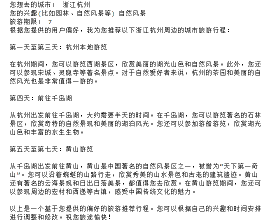
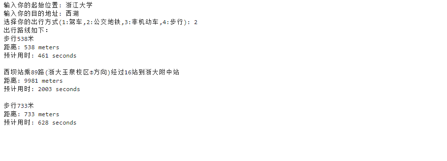

临距离：城市智能旅游推荐与导览
1. 项目概述
1.1 产品名称与功能
名称： 临距离
功能： 虚拟导游、旅行助手、行程规划
简介： 基于文心大模型和百度地图的旅游类产品，面向全国各地游客提供旅游推荐和路线导览的功能
1.2 项目背景
随着全球城市化进程的加快，越来越多的人口向城市集中。城市不仅是经济、文化和科技的中心，也是旅游的热门目的地。现代城市提供了丰富的旅游资源，如历史文化景点、现代化的商业区和多样化的美食文化。这些资源吸引了大量国内外游客，使城市旅游成为经济发展的重要驱动力。
近年来，随着人们生活水平的提高和休闲时间的增加，旅游已成为大众生活的重要组成部分。尤其是在大城市，游客数量逐年增长。然而，游客在面对大量旅游信息时，往往会感到困惑，不知道如何选择最适合自己的旅游路线和景点。这种信息过载的问题，使得游客的旅游体验不尽如人意。
1.3 项目动机
- 提升游客旅游体验： 根据游客的兴趣、偏好和实时位置，提供精准且个性化的旅游建议和导览服务，从而显著提升游客的旅游体验。
- 减少信息获取时间成本： 现有的旅游信息获取方式繁琐且耗时，游客需要花费大量时间进行资料查找和筛选。智能推荐系统可以自动分析和整合多种旅游信息，快速为游客提供有价值的推荐和导览，帮助游客高效地规划行程，节省时间成本。
- 适应多样化的用户需求： 不同游客有着不同的兴趣和需求，如历史文化爱好者、自然景观爱好者、美食爱好者等。传统导览方式无法满足这些多样化需求，而智能推荐系统能够通过分析游客的行为数据和偏好，提供个性化的旅游方案，满足各类游客的需求。
- 支持旅游行业的数据驱动决策： 智能推荐系统不仅可以为游客提供个性化服务，还可以为旅游行业提供丰富的数据支持。通过分析游客的行为和偏好数据，旅游管理者可以获得关于旅游热点、游客流量、服务评价等方面的深入洞察，从而做出更加科学和有效的决策，优化资源配置，提升整体效益。
1.4 重要性与价值
本项目旨在利用文心大模型等先进的人工智能技术，开发一个智能城市旅游推荐与导览系统。该系统将通过智能推荐和个性化行程规划导览，帮助游客高效地探索城市，提升他们的旅游体验。同时，本项目还将推动旅游行业的信息化和智能化发展，为旅游从业者提供更好的数据支持和决策依据。
此外，智能推荐系统可以分析游客的行为数据和偏好，帮助旅游管理者了解游客流量和需求趋势，根据游客的兴趣和访问频率，合理分配导游资源、景区设施和服务人员，提升整体服务质量和效率，从而优化旅游资源的配置。
2. 问题陈述
个性化需求难以满足
不同的游客有着不同的兴趣、偏好和需求。例如，有些游客喜欢文化历史，有些则偏爱自然景观，还有一些游客对美食情有独钟。传统的旅游推荐和导览方式往往以大众化信息为主，缺乏对个性化需求的深度挖掘和响应，导致很多游客的旅行体验不尽如人意。导览服务不够智能化
现有的旅游导览服务主要依赖于人工导游或静态的地图和指南，难以提供实时和动态的导览信息。当游客在旅行过程中需要即时的路线建议或遇到紧急情况时，传统导览方式难以及时响应，影响游客的旅行安全和便捷性。市场竞争激烈，服务质量亟待提升
随着旅游市场的不断扩展和竞争的加剧，提升服务质量成为吸引和留住游客的关键。传统的旅游服务模式难以适应市场变化和用户需求的多样化，迫切需要借助新技术实现服务的升级和优化，以在竞争中脱颖而出。国际游客的语言和文化障碍
对于国际游客而言，语言和文化差异常常成为他们旅游体验中的障碍。现有的旅游信息和服务大多以本地语言为主，缺乏对多语言和文化背景的支持，影响了国际游客对目的地的全面了解和深度体验。
2.2 项目目标
- 基于文心大模型构建一个智能推荐系统，能够根据用户偏好精准推荐旅游景点和服务。
- 基于百度地图实现实时导览和导航功能，提供动态行程规划。
3. 方法技术
3.1 文心大模型调用
文心大模型是百度开发的一个强大的自然语言处理模型，能够理解和生成自然语言文本。它在多个语言任务上表现出色，包括文本分类、情感分析、问答系统和文本生成等。在本项目中，文心大模型主要用于以下几个方面：
- 兴趣分析与推荐生成：通过分析用户输入的兴趣和偏好，文心大模型能够生成个性化的旅游推荐。模型能够理解用户描述的兴趣点（如历史景点、自然风光、美食等），并结合城市的旅游资源，生成符合用户兴趣的景点推荐列表。
- 问答系统：用户在使用过程中可以通过自然语言提问，例如“北京有哪些适合亲子游的地方？”或“推荐一些上海的必去美食店。”文心大模型能够理解这些问题，并提供准确且有用的答案，提升用户体验。
- 文本生成与优化：文心大模型还可以生成和优化旅游景点的介绍文本，使推荐内容更加生动、有吸引力。例如，生成每个景点的详细描述、历史背景和特色亮点等信息。
3.2 百度地图调用
百度地图是一个功能强大的地图和导航服务，提供详细的地理信息、路线规划和实时交通数据。在本项目中，百度地图主要用于以下几个方面：
- 位置服务：通过获取用户的实时位置，百度地图能够为用户提供基于当前位置的景点推荐。例如，当用户在天安门广场附近时，系统可以推荐周边的景点和活动。
- 路线规划：百度地图提供多种交通方式的路线规划，包括步行、驾车和公共交通。系统可以根据用户的偏好和实时交通状况，为用户规划最佳的旅游路线，并提供详细的导航指引。
- 周边查询：百度地图可以查询用户当前位置周边的服务和设施，如餐馆、酒店、商店等。结合文心大模型的推荐，用户可以获得更全面的旅游信息和服务。
3.3 系统架构
本项目的系统架构主要包括以下几个模块：
- 用户界面（UI）：通过移动应用或网页应用提供友好的用户界面，用户可以输入兴趣和偏好、查看推荐结果、进行路线查询等。
- 推荐引擎：基于文心大模型，负责解析用户输入、生成个性化推荐、回答用户问题等。推荐引擎与百度地图的API接口进行集成，获取景点的地理位置和相关信息。
- 导航与导览模块：基于百度地图API，提供实时的路线规划和导航服务。用户可以查看推荐景点的最佳路线、周边设施和实时交通状况。
- 数据分析与反馈：通过收集和分析用户的行为数据和反馈，优化推荐算法和服务内容，提高系统的智能化和用户满意度。
3.4 技术实现
- 文心大模型的调用：
通过调用文心大模型的API，实现旅游推荐和文本生成。以下是一个示例模型调用示例代码，展示如何调用文心大模型：
1 | def get_access_token(): |
- 百度地图API的调用：
通过调用百度地图的API，实现位置查询和路线规划。以下是一个百度地图API调用示例代码，展示如何根据当前输入位置获取其经纬度坐标：1
2
3
4
5
6
7
8
9
10
11
12
13
14
15
16
17
18
19# 获取经纬度坐标
"""
使用 自己的百度地图API Key替换下列示例中的应用API Key
"""
ak="API Key"
def getPosition(address):
url = 'http://api.map.baidu.com/place/v2/search?query={}®ion=全国&output=json&ak={}'.format(address,ak)
res = requests.get(url)
json_data = json.loads(res.text)
pos=[]
if json_data["status"] == 0:
lat = json_data["results"][0]["location"]["lat"] # 纬度
pos.append(lat)
lng = json_data["results"][0]["location"]["lng"] # 经度
pos.append(lng)
else:
print(json_data["message"])
return "0,0", json_data["status"]
return pos - 可运行代码
1 | 旅游推荐和路线规划可运行示例代码见附录 |
4. 应用场景
小李的智能城市旅游体验
小李是一名工作繁忙的白领，最近终于有机会在周末去北京旅行。由于时间有限，他希望能在短时间内尽可能多地体验北京的特色景点和美食。然而，面对大量的旅游信息和攻略，小李感到无从下手。他决定使用最新的智能城市旅游推荐与导览系统，体验一次高效、个性化的旅行。
小李打开了这款“临距离”智能旅游应用，在应用首页，他输入了自己的旅游地点、兴趣和偏好：“历史文化、美食、自然景观”以及旅游时间一周。系统迅速分析了他的需求，并给出了几个推荐景点：故宫博物院、天坛公园、南锣鼓巷和颐和园。系统不仅推荐了景点，还根据小李的兴趣生成了详细的行程安排和景点介绍。例如，故宫博物院的介绍中详细描述了各大殿的历史背景和文化价值，让小李对即将参观的景点充满期待。此外，系统还推荐了附近的特色餐馆，让小李在游览时可以随时品尝到地道的北京美食。小李决定先去故宫博物院，他通过应用查询最佳路线。应用使用百度地图API，提供了多种交通方式的路线规划，并推荐了最优路线。小李选择了地铁前往，系统实时更新了他的行程，并在到达地铁站后提供了步行导航指引，确保他不会迷路。
在参观过程中，应用还提供了实时的语音导览服务。当小李走到乾清宫时，导览系统开始详细介绍这座宫殿的历史和建筑特色，让他仿佛有了一位私人导游。中午时分，小李觉得有些疲惫，决定去南锣鼓巷休息一下。系统根据他的当前位置和时间，推荐了一条优化后的行程，并告诉他南锣鼓巷有哪些值得一试的餐馆和小吃。小李在这里品尝了老北京炸酱面和糖葫芦，感受到了地道的北京风味。下午，小李决定前往颐和园，但在途中忽然下起了大雨。系统立刻提醒他天气变化，并建议他改为参观室内景点，如北京首都博物馆。同时，系统还提供了紧急避雨的地点和最近的出租车服务，让小李感到非常安心。
在智能旅游系统的帮助下，小李度过了一个充实且愉快的周末。他不仅高效地游览了北京的著名景点，还品尝到了地道的北京美食。系统的个性化推荐、实时导航和灵活调整功能让他的旅行更加顺利和愉快。小李对此次智能旅游体验非常满意，并决定在以后的旅行中继续使用这款应用。
5. 创新之处
5.1 个性化推荐算法
通过利用文心大模型的自然语言处理能力，本项目可以准确分析用户的兴趣和偏好，从而生成高度个性化的旅游推荐。与传统的推荐系统相比，文心大模型能够理解复杂的用户需求和语言表达，提供更为精准和人性化的推荐服务。例如，用户可以输入“我喜欢古代历史和传统文化”，系统会推荐相关的景点和活动，而不仅仅是根据大数据和评分提供大众化的推荐。5.2 实时动态导航
整合百度地图的实时导航功能，使得旅游推荐与导览系统能够根据用户的实时位置和交通状况，提供动态调整的旅游路线。这不仅提升了导航的精准度，还可以根据实际情况（如交通堵塞、突发天气等）及时调整行程安排，确保用户的旅行顺利进行。传统的旅游应用通常无法提供如此灵活和实时的导航服务。5.3 数据驱动的智能分析
通过收集和分析用户行为数据，系统可以不断优化推荐算法和服务内容。文心大模型和百度地图提供的数据分析功能，可以帮助旅游管理者了解游客的行为模式和偏好，进而做出数据驱动的决策。例如，可以根据游客的访问频率和反馈，优化景区的资源配置和服务内容，提高旅游服务的整体水平。5.4 支持多语言和文化背景
为了吸引国际游客，本项目具有多语言支持和文化背景适配功能。文心大模型的多语言处理能力可以帮助国际游客克服语言障碍，提供准确的翻译和文化解释。无论是景点介绍还是美食推荐，系统都能提供符合游客文化背景的信息，增强用户对目的地的认同感和旅游体验。
6. 未来的前景
- 6.1 市场潜力
随着全球旅游业的不断发展，智能旅游推荐与导览系统的市场需求日益增长。根据统计数据显示，全球旅游市场规模预计将在未来几年内继续扩大。旅游者对个性化、智能化旅游服务的需求也在不断增加。本项目所提供的创新功能和高效服务，能够极大地满足市场需求，具备广阔的市场前景。从下图中可以看到，疫情结束之后，国内的旅游游客数量和旅游总花费都呈现上升的趋势。

6.2 技术升级与扩展
未来，随着人工智能和大数据技术的不断进步，文心大模型和百度地图将会持续升级，提供更强大的功能和更高的服务质量。可以将语音识别功能和图像功能加入，构建一个多模态的智能体。此外本项目还可以进一步优化推荐算法和导航服务，提升系统的智能化水平和用户体验。项目还可以扩展到其他领域，例如智能交通管理、城市规划和智慧城市建设。通过整合更多的城市基础设施数据和服务信息，系统可以为城市管理者提供更全面的决策支持，推动城市的智能化和可持续发展。6.3 多元化服务拓展
本项目未来可以通过与旅游相关行业的深度合作，提供更加多元化的服务。例如，与酒店、餐饮、交通等行业的合作，提供一站式的旅游解决方案；与文化机构和旅游景点的合作，提供更丰富的旅游内容和体验。通过这些合作，可以提升系统的服务覆盖面和用户粘性，创造更多的商业价值。
附录
A 智能推荐代码
1 | import requests |

B 路线规划代码
1 | import requests |
